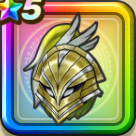

ガルーダヘルム
攻略班 8.0点 / 鳥系への耐性+5%怪人系への耐性+5%鳥系への耐性+5%怪人系への耐性+5%ドルマ属性斬撃・体技ダメージ+5%【レンジャー】みかわし率+2%
くわしい特徴
【レベル別習得スキル】 Lv1鳥系への耐性+5% Lv8すばやさ+5 Lv10怪人系への耐性+5% Lv12【レンジャー】みかわし率+2% Lv15ドルマ属性斬撃・体技ダメージ+5% Lv18鳥系への耐性+5% Lv20【レンジャー】守備力+8 Lv23守備力+5 Lv25怪人系への耐性+5% 【限界突破スキル】 1凸攻撃力+5 2凸守備力+5 3凸すばやさ+7 4凸さいだいHP+10